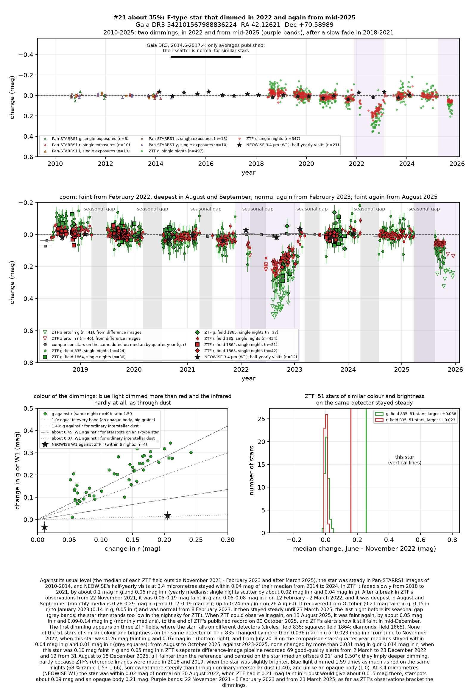
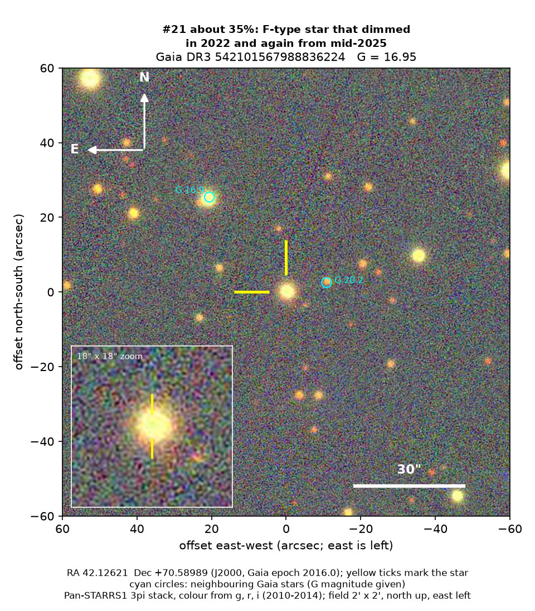
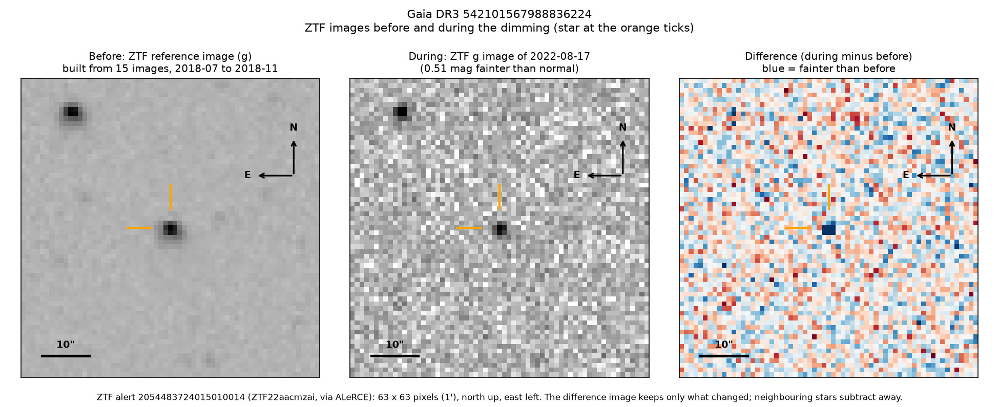

Professor of Mathematics
Paata Ivanisvili
Department of Mathematics, University of California, Irvine

Candidate 21: an F-type star that dimmed for a year in 2022 and again from 2025
Why this estimate. The dimming of 2022 is almost certainly real: ZTF, a survey telescope at Palomar Observatory in California, recorded it on three detectors, while none of 51 similar stars on the same detector changed by more than 0.04 magnitudes. The estimate is not higher because only ZTF recorded the dimmings; both began while ZTF was not observing the star; the second had not ended when the published measurements stop and rests on a single detector; the star’s slow fade of 2018 to 2021 is unexplained; and there is no spectrum.
How to read the pictures. The finder chart shows a patch of sky two arcminutes across, about a fifteenth of the Moon’s width, with north up and east to the left. The star sits between the two yellow ticks, and the white bar is 30 arcseconds long. On a light curve the vertical axis is magnitude, a brightness scale on which larger numbers mean fainter stars, and it is drawn so that down means fainter. Purple shading marks the two dimmings, and grey shading the months when the star could not be observed. Each survey uses slightly different filters, so each is compared with its own normal level. The ZTF pictures show ZTF’s reference image of the star, an image taken during the dimming, and the difference between the two, in which only what changed remains: blue means fainter and red brighter.

What changed. This F-type star, somewhat hotter and larger than the Sun, lies about 1,600 parsecs (5,200 light-years) away in Cassiopeia, behind a thick layer of the Milky Way’s dust. From 2018 to 2021 ZTF saw it fade slowly, losing about a tenth of its green light. After a break of almost three months in ZTF’s observations, it was faint in February 2022, and it went on dimming until August and September, when it had lost about 15 per cent of its red light and up to a quarter of its green. It recovered from October and was back to normal by February 2023.
It then stayed steady for two years, but when ZTF could next observe it after its yearly gap, in August 2025, it was faint again, by about 5 per cent in red light and 8 to 12 per cent in green, and it was still faint in mid-December 2025. ZTF’s alert system flagged the star as fainter 69 times in 2022 and 12 times from August to December 2025, always centred on it.
Why it might matter. Dust passing in front of the star is the likeliest cause. Green light dimmed 1.59 times as much as red, a little more steeply than through ordinary interstellar dust and far more than starspots on such a star would give, and a NEOWISE visit at the depth of the dimming found the infrared unchanged, which rules out an opaque body. An eclipse by another star lasts hours or days, not a year. Machine classifiers call the star possibly young, a label common in this dusty part of the sky, but it shows no warm dust or hydrogen emission and moves about 50 km/s differently from the stars around it, unlike most young stars. If the second dimming is the same material coming round again, it orbits the star every 3.1 to 3.7 years; but the star was at its brightest in 2018 and 2019, when an earlier passage was due, so the material would have to be new, perhaps dust from a recent collision. A spectrum would settle the star’s type and age.
No record of the dimmings could be found. SIMBAD has no entry for the star, VSX, the variable-star index, has nothing within 30 arcseconds, and Gaia, the European Space Agency’s star-mapping satellite, lists no variability. It is in no variable-star, young-star or cluster catalogue checked, nor among the dimming stars of Tzanidakis et al. (2025), and no transient report, Gaia alert or paper names it. ALeRCE, which holds ZTF’s alerts, has only machine-generated labels for it.
- Star
- Gaia DR3 542101567988836224, a reddened F-type star
- Location
- RA 42.12621°, Dec +70.58989° (J2000), in Cassiopeia, 9.9 degrees north of the Milky Way’s mid-plane
- Distance
- about 1,600 parsecs (5,200 light-years), within a range of 1,470 to 1,710 parsecs
- Brightness
- Gaia G = 16.95, far too faint for the eye or a small telescope
- Probability
- This candidate is unconfirmed. The percentage under the title is an estimate of the chance that it is a real, previously unrecorded case of the kind described. The estimate has not been checked by outside experts. See the introduction to all thirty-two candidates.
- Caveat
- There is no spectrum, and Gaia’s model of the star conflicts with the distance from its parallax. Only ZTF recorded the dimmings, both began while it was not observing the star, and the second had not ended when its published measurements stop, in October 2025; since the end of 2023 only one ZTF field covers the star. The slow fade of 2018 to 2021 is unexplained.

